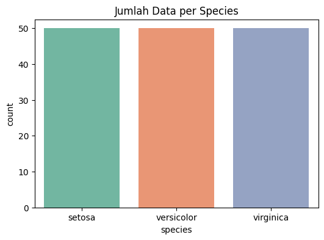
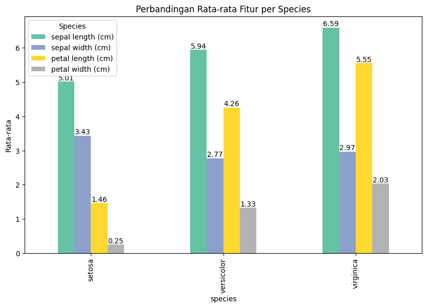
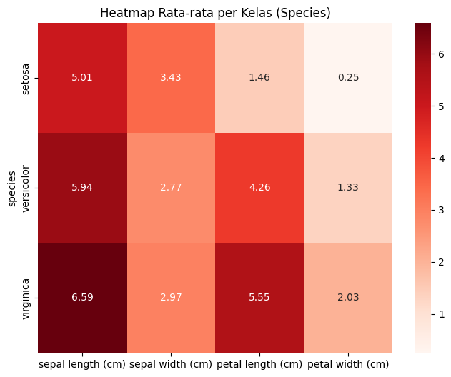

Eksplorasi Data#
# Import library yang diperlukan
import pandas as pd
import numpy as np
import matplotlib.pyplot as plt
import seaborn as sns
from sklearn.datasets import load_iris
import warnings
warnings.filterwarnings('ignore')
# Atur style untuk visualisasi
plt.style.use('default')
sns.set_palette("husl")
print("Library berhasil diimport")
Library berhasil diimport
1. Nilai Minimum dan Maksimum dari Setiap Kolom#
from sklearn.datasets import load_iris
import pandas as pd
# Load dataset
iris = load_iris()
df = pd.DataFrame(data=iris.data, columns=iris.feature_names)
df['species'] = pd.Categorical.from_codes(iris.target, iris.target_names)
# Min & Max dalam satu tabel
min_vals = df.drop("species", axis=1).min()
max_vals = df.drop("species", axis=1).max()
summary = pd.DataFrame({
"Minimum": min_vals,
"Maksimum": max_vals
}).round(2)
print("\n--- Nilai Minimum & Maksimum Setiap Fitur ---")
display(summary)
--- Nilai Minimum & Maksimum Setiap Fitur ---
| Minimum | Maksimum | |
|---|---|---|
| sepal length (cm) | 4.3 | 7.9 |
| sepal width (cm) | 2.0 | 4.4 |
| petal length (cm) | 1.0 | 6.9 |
| petal width (cm) | 0.1 | 2.5 |
2. Rata - Rata dari Setiap Kolom#
print("\n--- Rata-rata Setiap Kolom ---")
mean_all = df.drop("species", axis=1).mean().round(2).to_frame(name="Rata-rata")
display(mean_all)
--- Rata-rata Setiap Kolom ---
| Rata-rata | |
|---|---|
| sepal length (cm) | 5.84 |
| sepal width (cm) | 3.06 |
| petal length (cm) | 3.76 |
| petal width (cm) | 1.20 |
3. Rata-rata per Kelas (Species)#
mean_per_class = df.groupby("species").mean().round(2)
print("\n--- Rata-rata per Kelas (Species) ---")
display(mean_per_class)
--- Rata-rata per Kelas (Species) ---
| sepal length (cm) | sepal width (cm) | petal length (cm) | petal width (cm) | |
|---|---|---|---|---|
| species | ||||
| setosa | 5.01 | 3.43 | 1.46 | 0.25 |
| versicolor | 5.94 | 2.77 | 4.26 | 1.33 |
| virginica | 6.59 | 2.97 | 5.55 | 2.03 |
4. Jumlah Setiap Kelas (Grafik Batang)#
plt.figure(figsize=(6,4))
sns.countplot(x="species", data=df, palette="Set2")
plt.title("Jumlah Data per Species")
plt.show()

5. Visualisasi Tambahan: Perbandingan Rata-rata per Kolom#
ax = mean_per_class.plot(kind="bar", figsize=(10,6), colormap="Set2")
plt.title("Perbandingan Rata-rata Fitur per Species")
plt.ylabel("Rata-rata")
# Tambahkan nilai di atas batang
for container in ax.containers:
ax.bar_label(container, fmt="%.2f", label_type="edge", fontsize=10)
plt.legend(title="Species")
plt.show()

6. Heatmap Rata-rata per Kelas#
plt.figure(figsize=(8,6))
sns.heatmap(mean_per_class, annot=True, cmap="Reds", fmt=".2f")
plt.title("Heatmap Rata-rata per Kelas (Species)")
plt.show()

7. Ringkasan Hasil Eksplorasi#
numeric_columns = df.select_dtypes(include="number").columns
class_counts = df["species"].value_counts()
print("RINGKASAN HASIL EKSPLORASI DATA IRIS")
print("="*50)
print(f"Total sampel: {len(df)}")
print(f"Jumlah fitur numerik: {len(numeric_columns)}")
print(f"Jumlah kelas: {df['species'].nunique()}")
print(f"Kelas: {', '.join(df['species'].unique())}")
print("\nDistribusi kelas:")
print((class_counts / len(df) * 100).round(1).astype(str) + " %")
print("\nRentang nilai setiap fitur:")
summary = df[numeric_columns].agg(["min","max"])
for col in numeric_columns:
print(f" {col}: {summary.loc['min',col]:.2f} - {summary.loc['max',col]:.2f} "
f"(rentang: {(summary.loc['max',col]-summary.loc['min',col]):.2f})")
RINGKASAN HASIL EKSPLORASI DATA IRIS
==================================================
Total sampel: 150
Jumlah fitur numerik: 4
Jumlah kelas: 3
Kelas: setosa, versicolor, virginica
Distribusi kelas:
species
setosa 33.3 %
versicolor 33.3 %
virginica 33.3 %
Name: count, dtype: object
Rentang nilai setiap fitur:
sepal length (cm): 4.30 - 7.90 (rentang: 3.60)
sepal width (cm): 2.00 - 4.40 (rentang: 2.40)
petal length (cm): 1.00 - 6.90 (rentang: 5.90)
petal width (cm): 0.10 - 2.50 (rentang: 2.40)